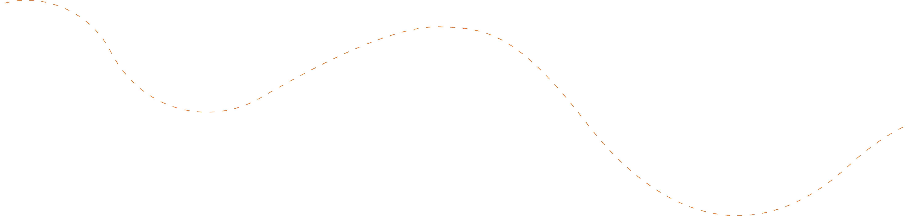
OVERVIEW*
The PROBLEM
Penn students experience high social pressure in an environment where expression is hyper-visible and identity-linked. Existing platforms either feel too public or reward performative vulnerability, leaving no safe, shared space for unfiltered expression within a shared campus context.
The SOLUTION
We designed Pent Up to act as a digital release valve, engineered to dismantle the performative dynamics of the Penn community and strip away social validation mechanics.
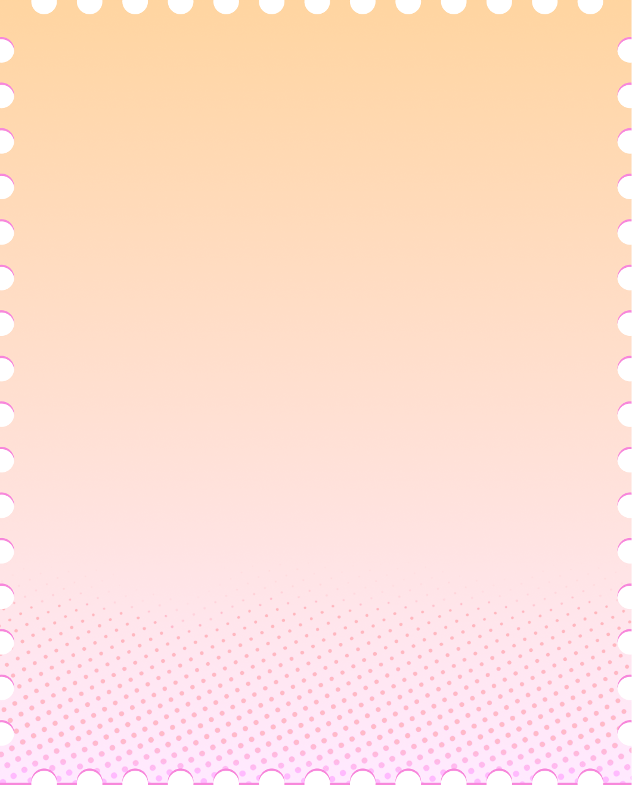
No Feedback Loops
Removed upvotes and virality trackers to eliminate the dopamine loops that drive engagement farming.
Pure Expression
The "read-and-release" architecture lets users express freely without performance.
Penn-Locked Anonymity
Email verification creates a high-trust, Penn-only environment for sharing with peers.
A digital sanctuary that prioritizes psychological safety over viral metrics.
My CONTRIBUTION
Pent Up was originally conceived as a two-person side project. Recognizing that our ambitions outpaced our immediate resources, I pitched the concept to our club, Penn Spark, to secure a seven-person, cross-functional team.
As lead designer, I defined trust and anonymity as core product constraints and owned the end-to-end experience, from UX research through final visual design. I also acted as the connective tissue between design and development—clarifying intent, resolving feasibility questions, and ensuring the product shipped as designed.
Alongside this, I established the design system, designed key launch materials, including physical flyers and Instagram story assets, and designed the final showcase presentation.
RESEARCH*
Our MARKET AUDIT
To understand the mechanics of anonymous spaces, we audited two extremes to identify the "sweet spot" for genuine expression:

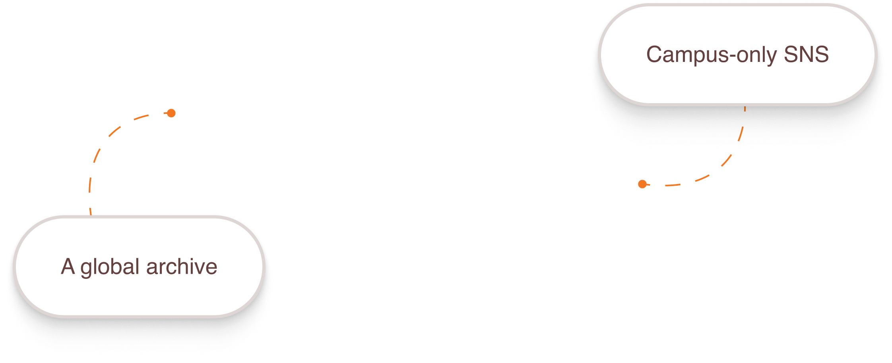
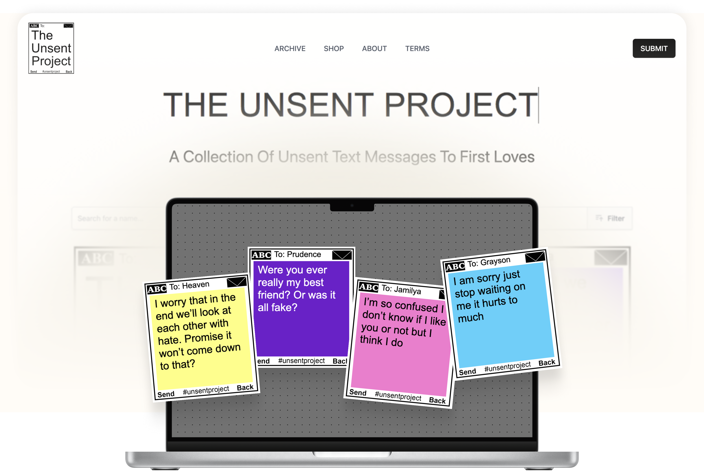
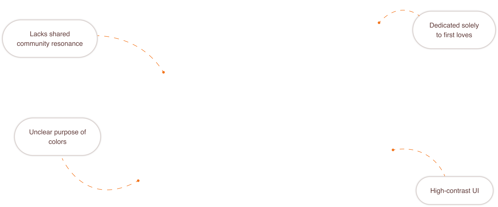
While we were inspired by its raw, archive-like energy, The Unsent Project functions as a global repository of unsent messages to first loves. This tightly defined prompt produces emotionally similar submissions, limiting broader resonance within a campus community and offering little variation in how users engage with the archive.
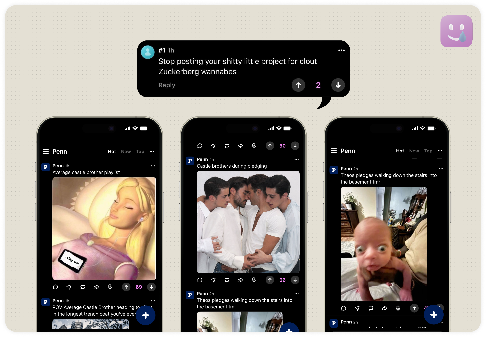
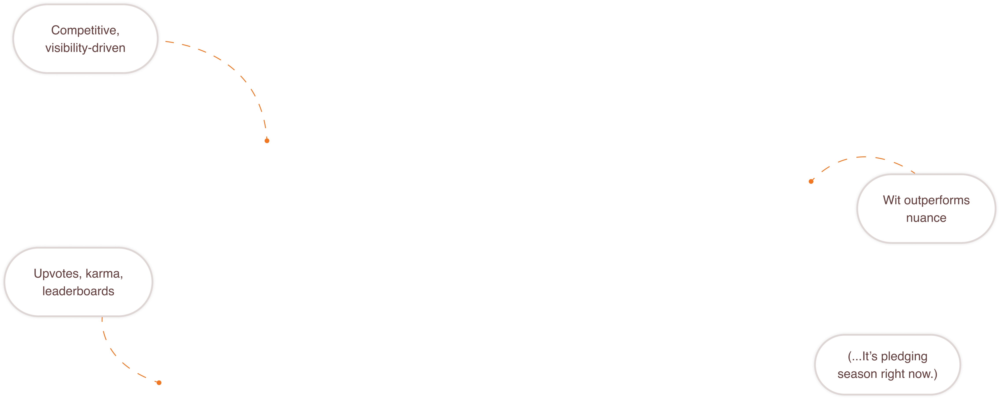
Sidechat captures hyper-local campus context, but its interaction model is driven by public feedback systems such as upvotes, karma, and leaderboards. These mechanics rank posts, subsequently privileging visibility and shaping what content rises. By combining anonymity, public visibility, and ranking, Sidechat unintentionally creates a space where the most incendiary responses get rewarded.
CONCLUSION?
Pent Up needed to preserve local context while removing public feedback and ranking mechanics altogether—a Zero-Validation Architecture.
Our PROTO-PERSONAS
To ensure we didn't just design for ourselves, we created proto-personas—the Anonymous Poster (seeking release) and the Curious Scroller (seeking connection)—to stress-test our features against two opposing user needs: absolute anonymity vs. community resonance.


Our DILEMMAS
Allowing full anonymity without verification would have undermined the platform's campus-specific purpose. At the same time, requiring visible identity or persistent accounts would discourage participation by making vulnerable expression feel traceable.
We determined that preserving Penn exclusivity outweighed the perceived discomfort of verification. Our solution was a verify-and-obfuscate flow: users authenticate once using a Penn email, after which identifying information is immediately hashed and never stored in plain text.
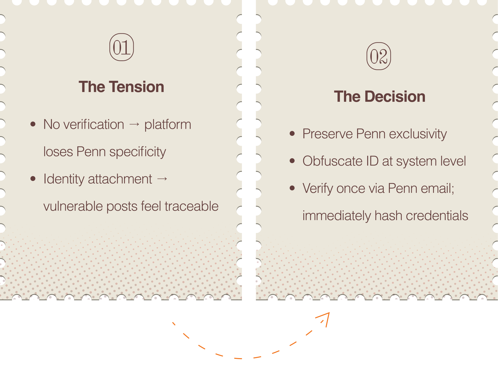
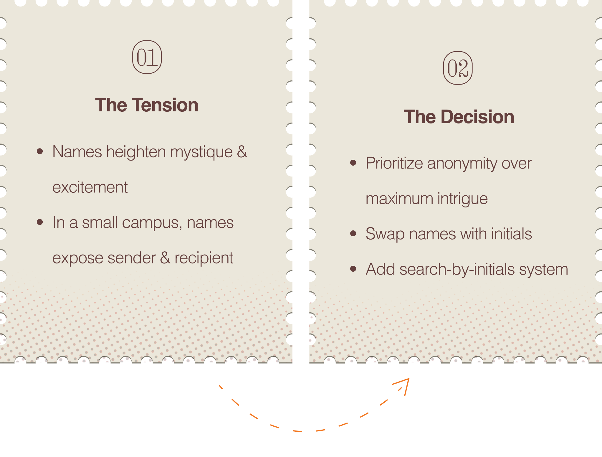
While The Unsent Project allows users to dedicate confessions to full names, we identified this as a significant risk within a small, tightly networked campus.
We chose to sacrifice some intrigue in favor of protection and went with initials. Later, we implemented a search-by-initials system that preserves discovery while introducing a critical layer of obfuscation.
DESIGN*
Our IDEATION
I led a design workshop to define the project's visual direction and align the team around a shared artistic language. We converged within our Pinterest moodboard and emerged with our three core visual motifs:

"Picture smooth gradients vandalized by pencil graffiti, or crumpled notebook pages arranged in perfect grids—a dialogue between order and chaos."
—That was my original pitch to the club, when we were gathering interested team members. However, as we moved into wireframing, we deliberately scaled back the visual disruption to preserve readability and navigation. We focused on maintaining the metaphor through texture and tone rather than disorder.
And so, we solidified our theme of juxtapositions:
CHAOS
Human messiness contained within a structured system.
Our USER FLOW
To support a read-and-release experience, we deliberately minimized decision points throughout the flow. Introducing unnecessary choices risked slowing users down at the moment when expression should feel immediate.
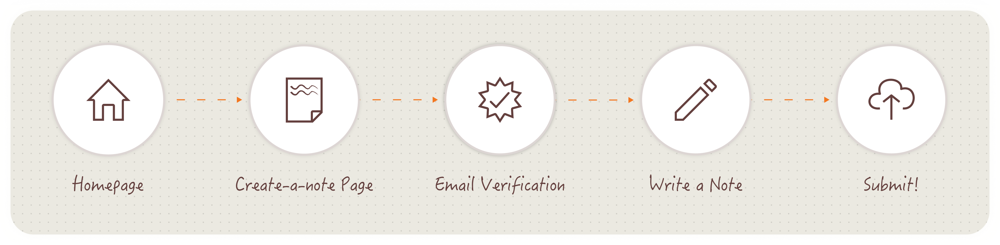
Our LO-FI WIREFRAMES
We used lo-fi wireframes to define the core screens, hierarchy, and flow.
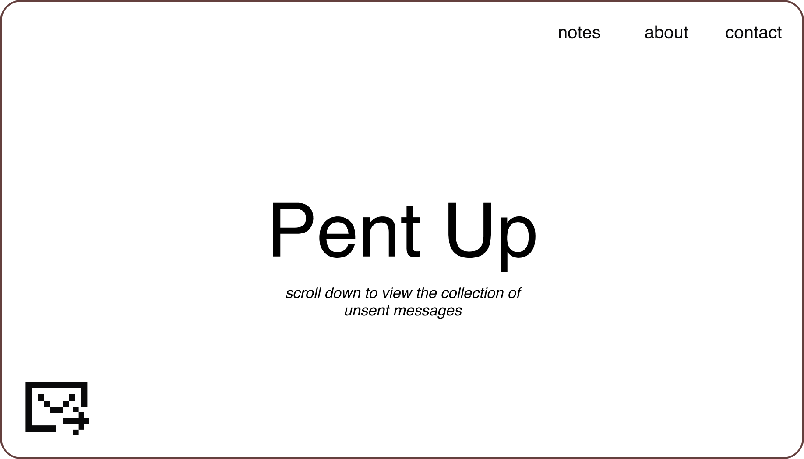
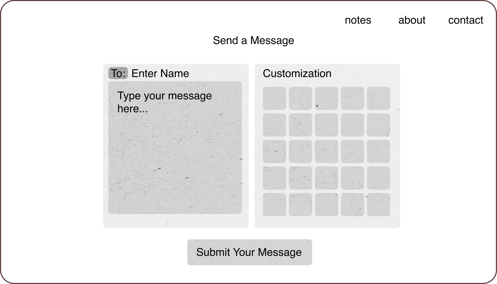
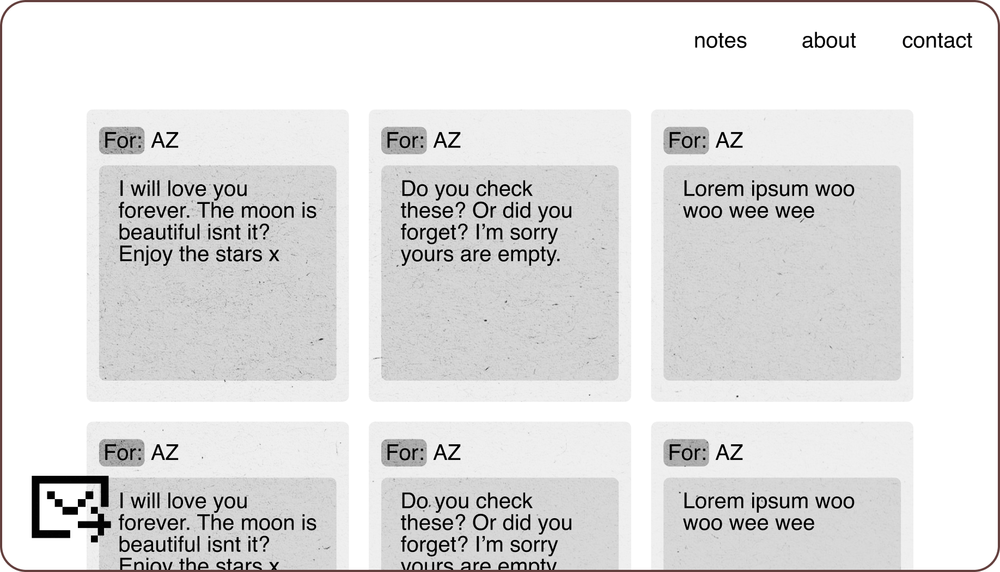
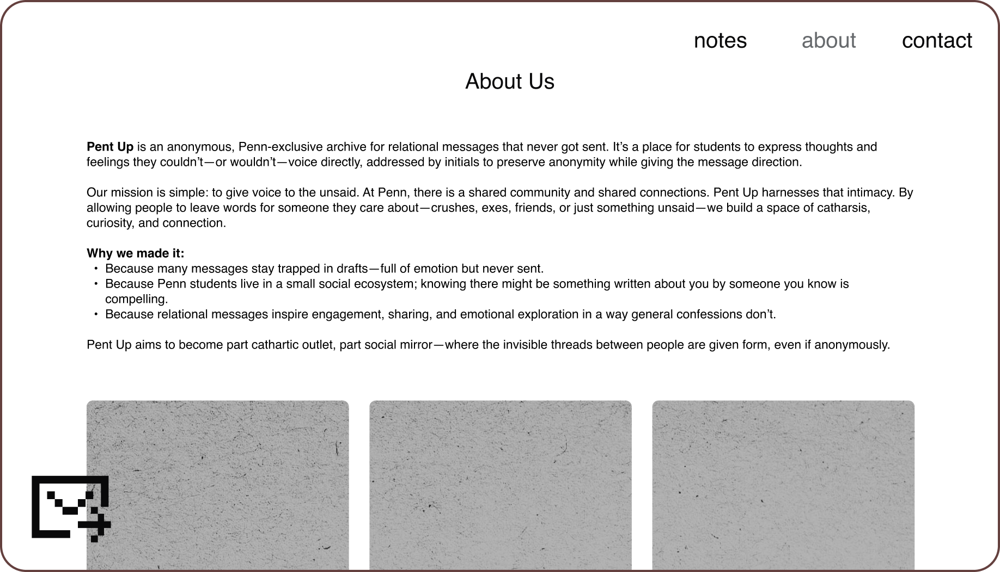
Our MID-FI WIREFRAMES
We experimented with color schemes for the hero and looks for the main feed.
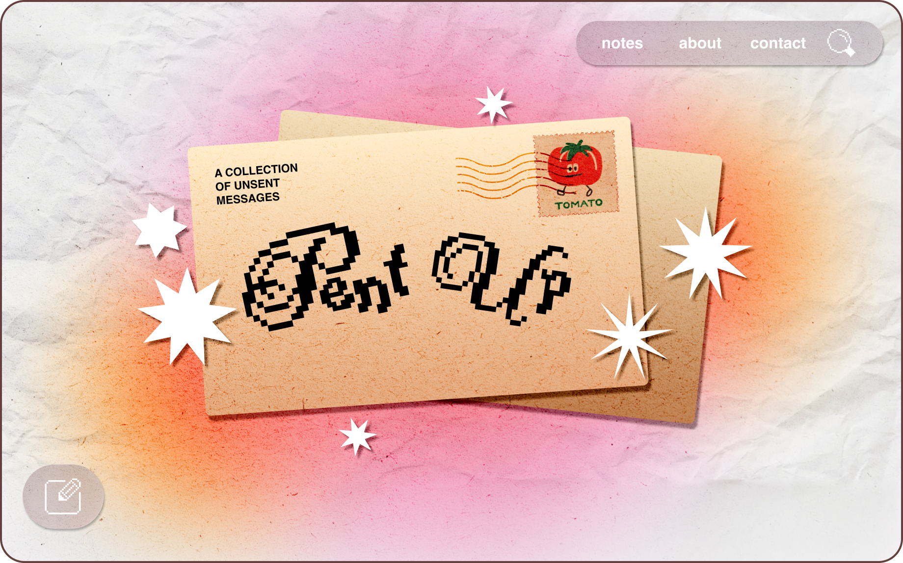
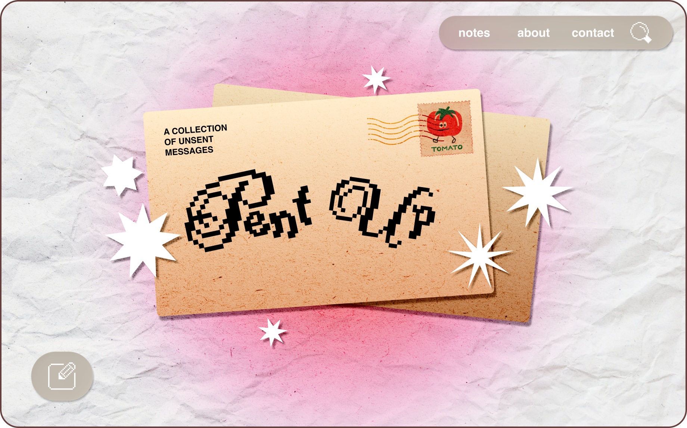
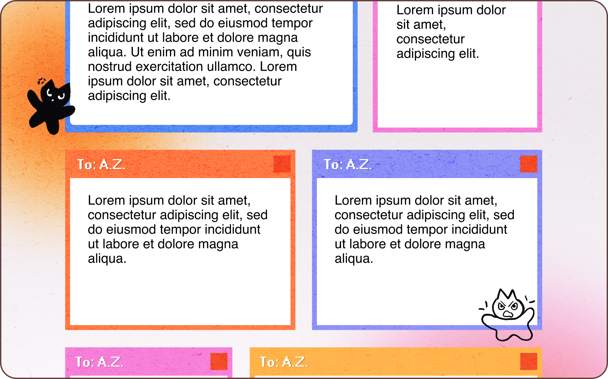
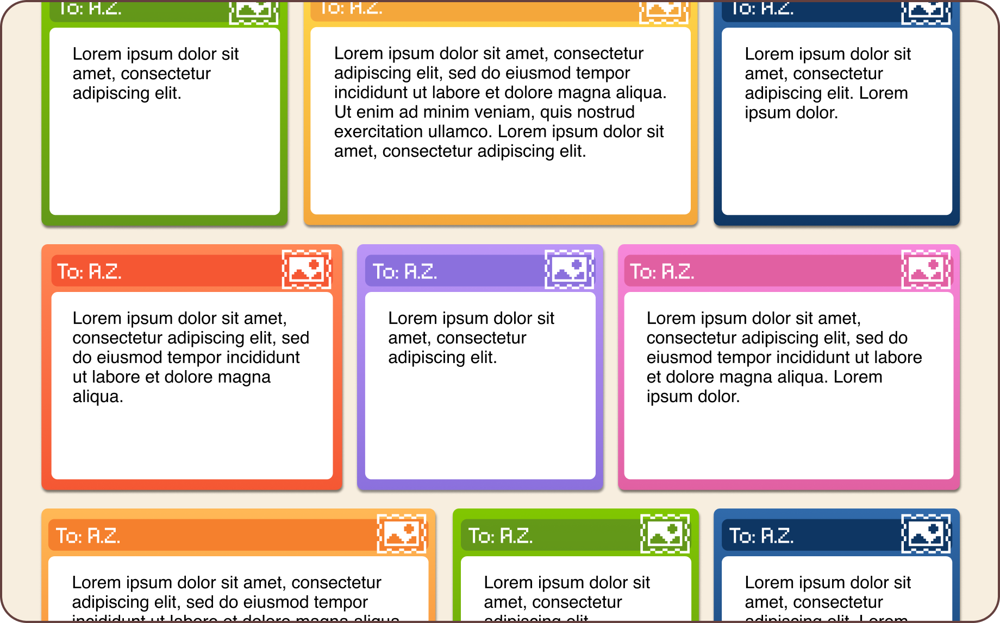
Our MASCOT EXPLORATION
We asked ourselves: what sort of mascot would suit Pent Up? Something memorable, adorable, on-theme...
An angry critter! After our team went through stages of doodling iterations and looking for inspiration, I assembled the logo: our mascot, trapped within a stamp. It's a visual pun: quite literally pent up.

Our FEEDBACK
Penn Spark hosted a midpoint check-in for all projects, during which Pent Up's mid-fi wireframes were presented. This served as our primary User Acceptance Testing session.
What worked:
- Visually distinct from standard social apps
- Described as approachable and expressive
- Strong enthusiasm for the tactile paper textures
- Positive reactions to the emotion avatars
- The Tasmanian Devil mascot was called intuitive, charming, and memorable
What didn't work:
- Pixel fonts were widely enjoyed, but many users raised readability concerns
- Users unsure how to find specific content beyond scrolling → a desire for search or filtering
- The competing textures and decorations were seen as overwhelming
TENSION:
How could we preserve charm without sacrificing clarity?
The Spark community had identified critical usability barriers.
I led the team in translating these critiques into three primary design pivots:
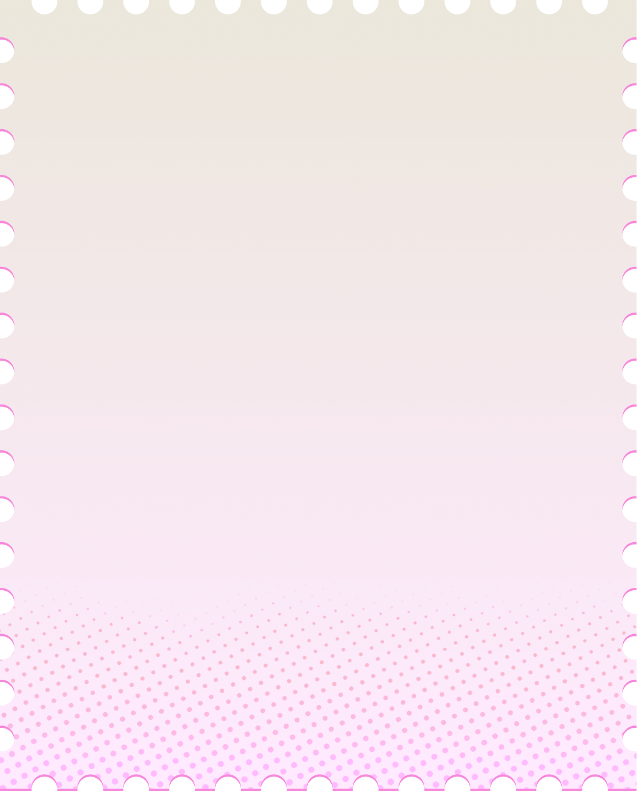
Typography & Accessibility
Pixel fonts were difficult to read in large quantities. So we ensured Helvetica was used for body text, while pixel fonts were used sparingly, for headers.
Navigation & Discovery
Users were unsure how to find specific content beyond scrolling. So we introduced a search-by-initials feature in the navigation bar.
Visual Hierarchy
The interface felt visually dense in the body of the homepage, where all the messages were. So we reduced decorative elements in reading contexts.
Our DESIGN PIVOTS

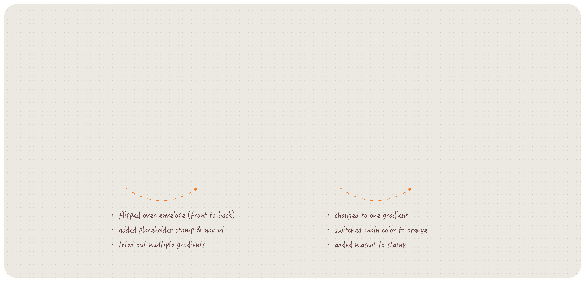
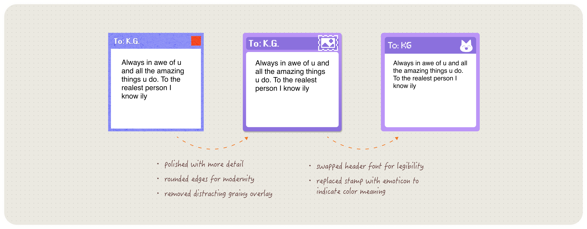
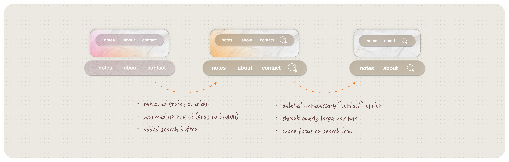
Our FINAL PROTOTYPE

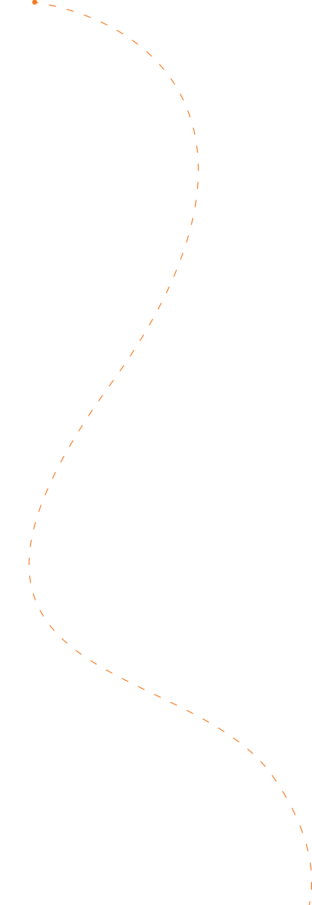

The Sanctuary Entryway
Establishing a retro-tactile identity through early-internet metaphors and physical textures.
Pent Up's landing page invites users into a hyper-local, anonymous space designed for the Penn community to connect without social risk or judgment. Pixel text and paper crinkles—kitschy!
An Archive of Pure Expression
Prioritizing intentional discovery while eliminating performative social metrics.
Sick of performative social dynamics? This feed allows you to browse an archive stripped of all validation metrics—no likes, no comments—to focus purely on the message. Use the search-by-initials feature to uncover the "mystique" of confessions possibly dedicated to you.
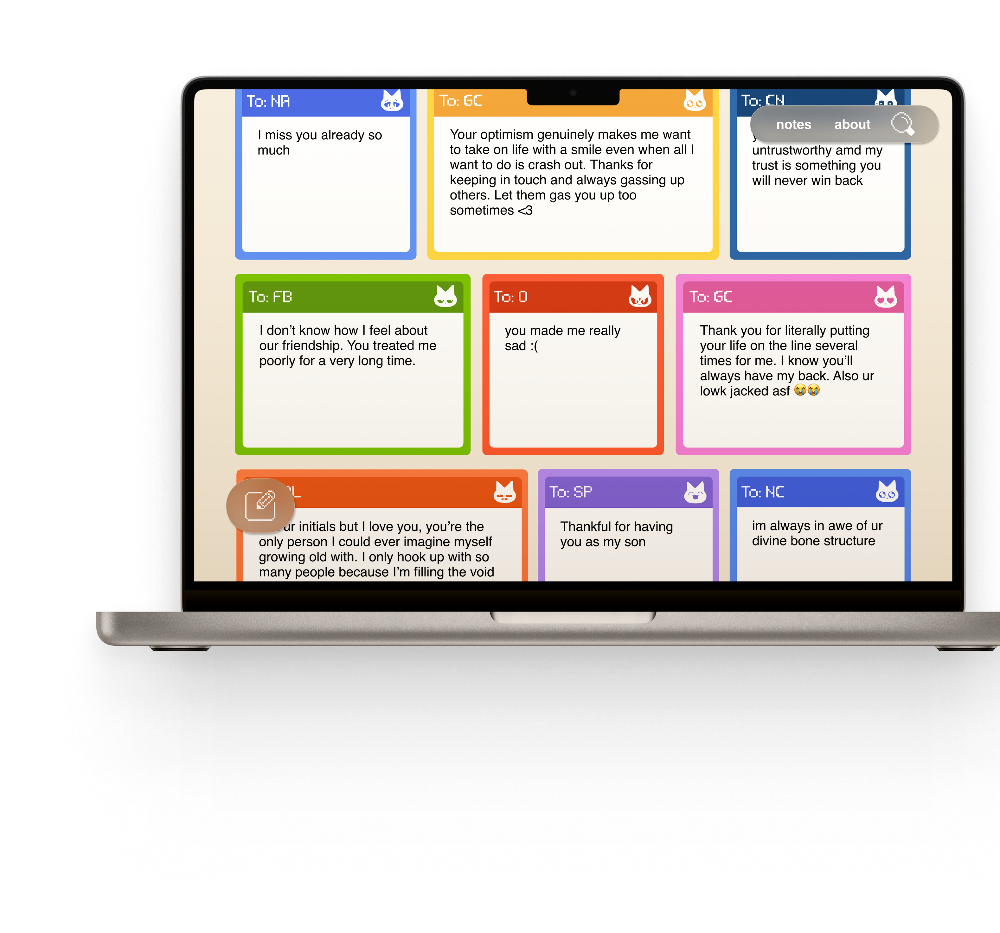

The "Read-and-Release" Flow
Bridging the gap between raw emotional unburdening and automated platform safety.
Ready to finally let loose? Draft your message and dedicate it anonymously using a "verify-and-obfuscate" flow that protects your identity through email hashing. Every post is secured by real-time AI moderation to ensure the sanctuary remains a safe harbor for student expression.
LAUNCH*
The MARKETING
Leading up to launch, we released a series of minimal Instagram teasers designed to spark curiosity without revealing functionality.
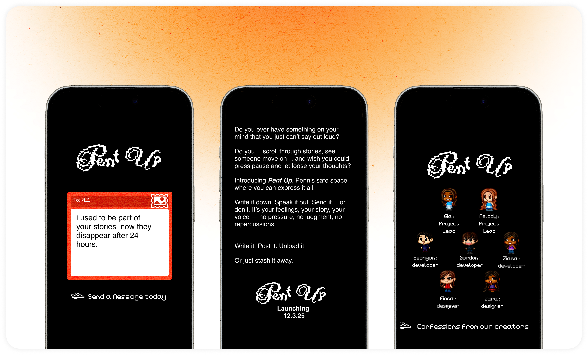
I paired this with physical flyers placed in high-traffic campus spaces, using sparse copy and tactile visuals to mirror the platform's tone.

WHAT?
Together, these efforts helped stir up awareness and build up mystique!
REFLECTION*
The RESULTS
Pent Up was awarded Best Red Project—the top honor within Penn Spark's advanced track for senior members. The project culminated in a live launch at the Wu and Chen Auditorium, where we presented our roadmap to the Penn community and secured 50+ verified submissions during the event alone.
Since the showcase, the platform has demonstrated sustained engagement. As of January 2026, Pent Up has reached 11,000+ digital impressions and a milestone of 100 total submissions, maintaining momentum well beyond its initial deployment.
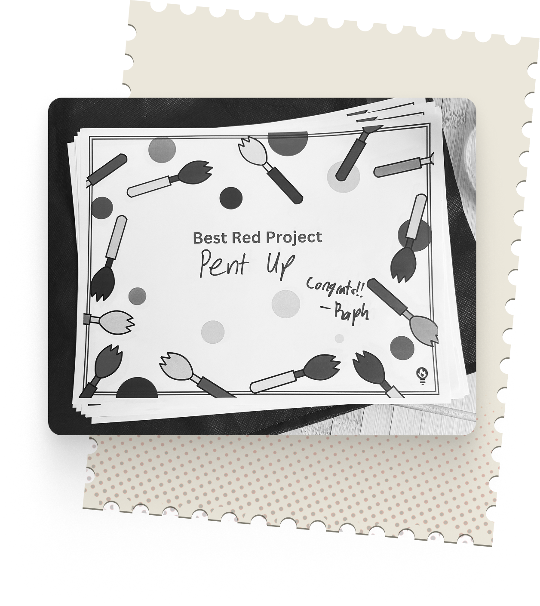
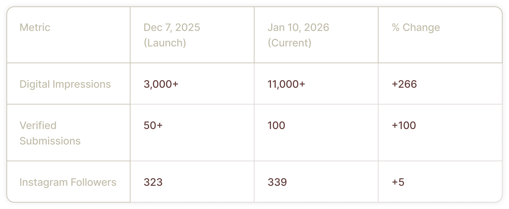
My FUTURE CONSIDERATIONS
Pent Up was born from a simple text exchange between two sophomores. What began as a dormant experiment grew into a vibrant social amalgam. However, because this product was deployed within a tight 10-week sprint while the team balanced midterms and theater performances, several high-impact features were intentionally deprioritized for the initial launch.
Refining the MVP
I plan to re-integrate the original intro animation to polish the entry experience and develop a "shareable" asset system—similar to Duolingo—that allows users to generate and download nicely formatted snapshots of confessions to share on social media.
Visualizing Campus Sentiment
I want to return to our initial concept of color and emotion mapping to visualize the collective "mood" of the community. By exploring the data-visualization potential of the platform, we could map campus sentiment over time—such as identifying measurable spikes in "stress" during midterms to provide tangible insights into student mental health.
Building a Sustainable Legacy
This is not the end of the project; we are currently discussing a legacy model to ensure the platform's longevity by handing the project and its community presence down to a new cohort of student leaders.

FIN.*